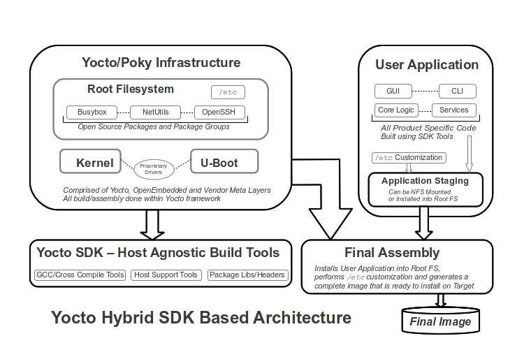

This paper outlines a hybrid Yocto based build environment architecture that provides the following features:
Utilization of the Yocto/Poky build environment for managing the Root Filesystem, Linux Kernel, U-Boot and proprietary target drivers.
Utilization of the Yocto SDK to build developer specific Application Code without the need for extensive bitbake recipe development.
Provides a clear separation of Operating System environment from Application Code.
Provides a simple yet robust means to track upstream feeds from the community to keep current with Open Source packages. For example, security updates in OpenSSL often need to be incorporated into a final product on a regular basis.
Figure 1 serves as an example of a hybrid SDK based architecture that promotes an easily managed development environment.

Figure 1 ‒ Yocto Hybrid SDK Based Architecture
Yocto, OpenEmbedded and all associated recipes and meta layers provide a robust environment for building Root Filesystems, and managing Open Source Packages. The recipes associated with this are well maintained by a large community, and often require little change. Thus, Yocto serves well as a package building engine, but it is not an IDE designed for day to day software development. In summary, Yocto serves well to pull Open Source Packages, build, and then deploy them into a viable Operating System environment.
User Application Code, however, is often much easier to maintain when built with a standard Makefile based build environment. It allows straight-forward builds in component directories without bitbake recipes and working within Yocto. To facilitate this approach, it's necessary for the User Application Code to have access to the Open Source libraries and header files, as well as have a “cross compile” tool chain to use for builds. The Yocto SDK serves will to provide these services and infrastructure.
Utilization of Open Source and associated build engines frees the developer from having to invest time and resources into maintaining an Operating System baseline; this is done by the community. Associated with this is the need to easily be able to pull and integrate in the never ending set of changes and evolution of all of these “upstream packages.” To help achieve an ability to easily keep current with the community, it's important to maintain a clean separation between the Operating System environment, and the User Application Code. A good analogy to consider in a design approach would be an Ubuntu based system; its an Operating System, and is easily maintained and kept current. But, developers would write application code that ran under Ubuntu. They would not make changes to Ubuntu, but rather, have a set of locally designed and built packages that ran under Ubuntu.
The architecture in this paper promotes this approach. Yocto is used to build the Operating System. From that, a set of cross-compile tools exists to develop the User Application Code. In the end, the User Application Code is installed into the Operating System Environment. The foundational points of this are as follows:
Work with unmodified Yocto, OpenEmbedded and Vendor released meta-layers. Often, what the SoC vendor releases is a meta-layer that installs into a stock Yocto release, and builds an image that can be installed on vendor supplied evaluation hardware/target(s).
Perform company specific updates to the stock, unmodified releases to allow the basic image to boot on the company specific hardware. This most often best done through a company specific meta-layer that installs into the Yocto build environment. This meta-layer appends changes to the original, unmodified upstream feeds.
Deploy a Yocto generated SDK onto the host development environment. This SDK contains libraries, header files and any host specific build tools. It's an environment that allows cross-compile and build.
Develop all User Application Code using the SDK tools, with standard Makefile based development.
Provide scripting to assemble the final image. This takes the stock image out of Yocto that boots stand-alone on the target, and installs the User Application Code into it. This also promotes building upgrade schemes which are modular by nature.
With an approach like this, the build environment becomes host agnostic; it could run on Ubuntu, CentOS or Fedora. A more practical company approach would simply be picking a base like Ubuntu 14.04 LTS as the supported build environment. But, the key is to avoid reliance on the host build machine; just like we separate the ties out between the Operating System, and User Application Code, we all separate out any ties to the host build environment. An example of this would be Python; use the SDK provided Python for any scripting in the build environment, versus relying on specific needs on the host build machine.
The Operating System Infrastructure is comprised of the following components:
A version of U-Boot that boots on the company specific hardware.
A version of the Linux Kernel that boots on company specific hardware.
A Root Filesystem that contains few or no modifications from a stock Yocto build, allowing the system to boot into a login prompt.
To achieve this, the following steps:
Work with the stock Yocto, vendor and other meta-layers, without modification.
Make any changes to U-Boot and the Kernel for the company specific hardware. This is best done with a company specific meta-layer which applies patch sets to U-boot and the Kernel without modification of the original upstream sources. For example, instead of modifying any meta-layer recipe, simply use the bbappend capability of OpenEmbedded to perform localized changes.
This company specific meta-layer would provide needed drivers for FPGA's and other proprietary hardware.
Work with package groups in Yocto as need be. For example, start with core-image-minimal, and beef that up to incorporate all other Open Source packages needed for the product. Typically, this would be creating a custom Distro in a company specific meta-layer, as well as a company specific package group set in the company meta-layer.
Through this approach, at any given time, we have the result of an image and Root Filesystem that can boot stand-alone, without application code. Multiple long-term capability can be realized through this approach:
Taking updates from the Community, such as new versions of OpenSSL, are easily done, as no changes were made on original source.
Taking vendor updates are easily accomplished, as not changes were done to original source.
Unit Test Cases are easily developed to qualify the Operating System environment.
It should also be noted that with an approach like this, U-Boot can TFTP load the Linux Kernel, and the Linux Kernel and NFS mount the Root Filesystem. Once stable, U-Boot requires few changes, it simply needs to have basic driver support for media and network. On a day to day development effort, there is no need to “re-flash” a target; simply boot everything over the network.
Yocto has inherent capability to generate an SDK. This SDK contains the following:
Cross-compile tools, as well as any host tools that are required for part of the User Application Code build.
It exports Header Files and Libraries required for the build.
When properly done, provides an environment that has no ties to the underlying host build machine.
If properly deployed, and coupled with a company specific Distro, it provides a clean cross-compile environment that allows for controlled releases of new tools. An environment is sourced for builds, and User Application Code simply builds with the environment.
Through the approaches outlined in the previous sections, the User Application Code simply becomes a set of executable applications which have been compiled against the libraries and header files from Yocto. These executable applications can be installed one by one, or as a group, on the the target. They are build without bitbake recipes, and in such, are not tied heavily to the Yocto infrastructure.
This facilitates a clean upgrade scheme; without heavy ties to the Operating System Environment, upgrades can be done in several means:
Full upgrade, OS infrastructure and application.
Application only upgrade.
But the real power is in day to day development. Stable targets with stable Operating Systems environments only require update of the specific application code components.
More so, the User Application Code is built with a standard Makefile based environment, avoiding the need for extensive bitbake recipe development.
Although past the scope of this paper, the key elements to consider are:
Establish original source and upstream feeds in github, allowing tracking of changes and updates from the community.
Establish a company specific meta-layer to performed needed changes to unmodified releases from the community. This meta-layer would also be responsible for building proprietary drivers.
Separate Application Code from Operation System code, thus promoting a clean, multi-year approach to maintaining source.
And then, utilize a boot-strap scheme to build:
Within github, have the core build infrastructure. This is a single point of pull. Within that pull is a master Makefile.
This core Makefile then executes to pull in the upstream, put it all into place, and execute the complete build.
This approach leads well to any continuous integration and build scheme.